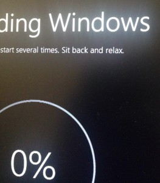
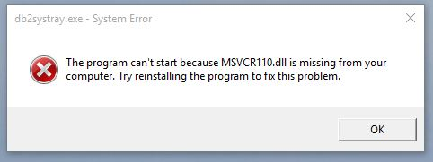
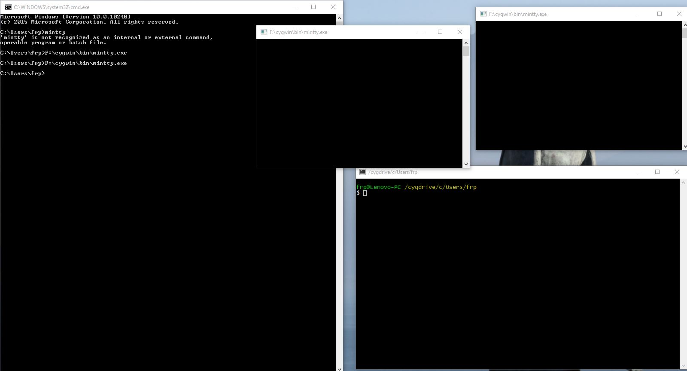
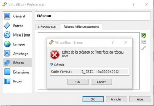
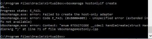
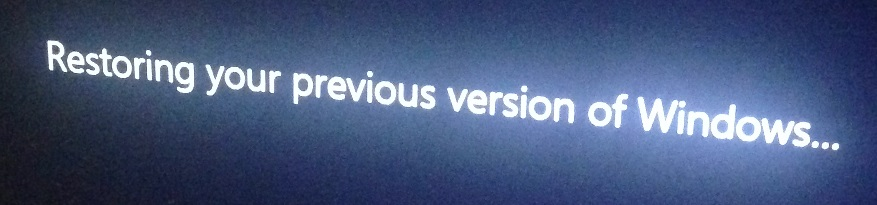

|
|
This was first published on https://blog.dbi-services.com/windows-10-i-tried-and-came-back (2015-09-07)
Republishing here for new followers. The content is related to the the versions available at the publication date
I’ve tried Windows 10 one month ago, and I had to roll back because VirtualBox failed to create host-only interfaces. Today, it forced me to upgrade again, so I tried a little further… and finally rolled back. Here is the list of issues I’ve seen in one hour of Windows 10
At boot I had the following:  Ok. this is a DB2 database I had installed some month ago on my laptop. A missing DDL messages seems to come from my past memories, as well as DB2. No problem, I don’t need that. Upgrades is also a good occasion to cleanup.
Then I tried to run my demo environment (several cygwin windows multiplexed my tmux and controled by Eventghost that I con control with my Pebble…) the only issue is that mintty opens several windows.  this is not blocking, and can probably be fixed.
Then there is VirtualBox. I stayed with 4.3 because in 5.0 my interfaces disappeared at each resume.
But In Windows 10 I can’t create any host-only interfaces. Any attempt from GUI finishes in:  and from command line:  I tried with the latest build and it’s the same.
There are probably some workarounds ( and it works elsewhere https://twitter.com/joerg_whtvr/status/640972224393052161) but looking at the tickets abou the issue shows that it’s not stable at all yet. I need Virtual Box (labs to test features, demos for presentations, workshop environment, docker, …) so this is a no-go for me. 
|
|
{kind=link}
{kind=link}
{kind=link}
{kind=link}
{kind=link}
{kind=link}
Hi Franck.
Today Virtual Box 5.0.4 Released and cleared “VirtualBox not supported for windows 10″ note form site. I tried, it is working on windows 10.
Best Regards Mahir M. Quluzade